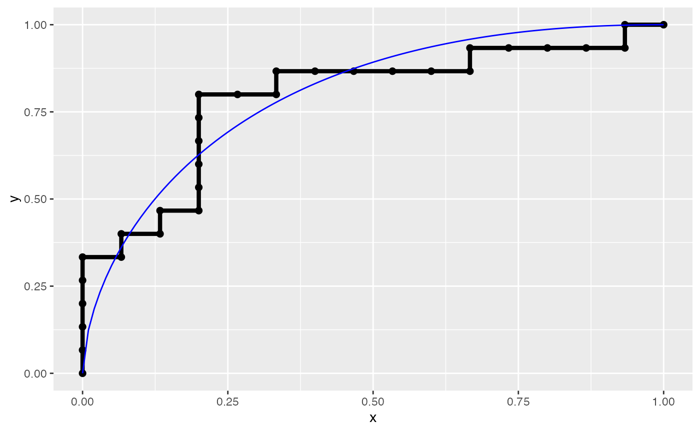

Calculate ROC Curve Parameters
calc_roc_fit.RdUse non-linear least squares to calculate the parameters
\(\alpha, \beta\) necessary to draw a ROC curve from
empirical data. The objective function assumed is of the form:
$$y \sim 1 - (1 - x^\beta)^{(1/\alpha)}$$
$$ \alpha \in (0, 1]$$
$$ \beta \in (0, 1]$$
$$ x \in (0, 1]$$
where the extreme x-values (0 and 1) are on the y = x equilibrium line.
Arguments
- xy
A data frame containing "x" (1 - tnr) and "y" (tpr) coordinates of an empirical ROC curve. This is typically the return value of a call to
roc_xy().- optim
character(1). Either "ML" or "LS" indicating whether Maximum Likelihood (default) or Non-linear Least Squares should be used in the optimization.- start
numeric(2). A named vector of initial start values for \(\alpha\) and \(\beta\). \(\alpha\) is the cost of a false positive and \(\beta\) is the cost of a false negative.
See also
Other ROC:
create_roc_data(),
geom_roc(),
plot_boot_roc(),
plot_emp_roc(),
roc_xy()
Examples
n <- 15
true <- rep(c("control", "case"), each = n)
pred <- withr::with_seed(1, c(rnorm(n, 0.45, 0.2), rnorm(n, 0.65, 0.2)))
rocxy <- data.frame(roc_xy(true, pred, pos_class = "case"))
calc_roc_fit(rocxy) # Max Lik
#> alpha beta
#> 0.4797849 0.6061594
calc_roc_fit(rocxy, "LS") # Least Squares
#> alpha beta
#> 0.4868346 0.6017798
# ML with new starting values
calc_roc_fit(rocxy, start = c(alpha = 0.3, beta = 0.6))
#> alpha beta
#> 0.4797848 0.6061596
# See the fit through the fitted values
ggplot2::ggplot(rocxy, ggplot2::aes(x = x, y = y)) +
geom_roc(shape = 19, size = 2) +
geom_rocfit(data = rocxy, col = "blue")
